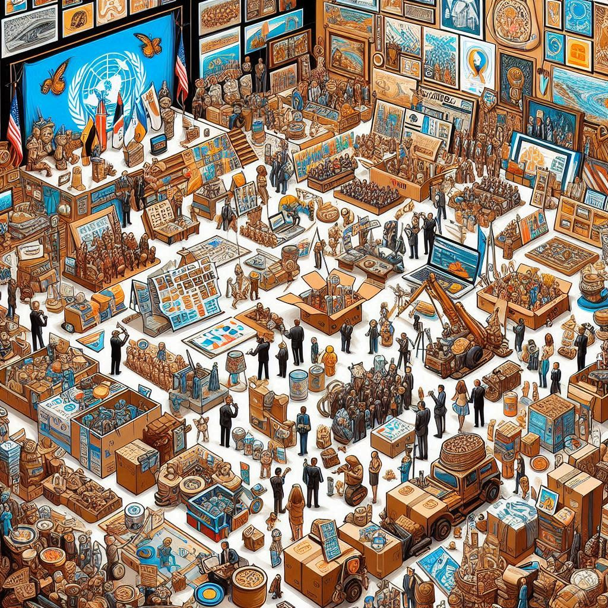
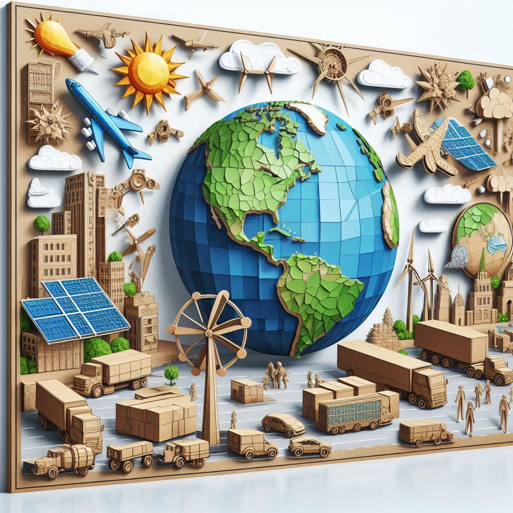

Sobre el Proyecto
¡¡Unete a esta fantastica aventura!!
¡Atención estudiantes y docentes! 🌟
¡Ha llegado la oportunidad que estaban esperando! 🎉 Los invitamos a participar en una competencia intercolegiada única que pondrá a prueba su creatividad y trabajo en equipo. En esta emocionante competencia, cada salón se dividirá en 10 grupos, con la cantidad de estudiantes necesaria para llenar esos 10 equipos, ¡para construir proyectos innovadores usando solo cartón! 📦✨
El equipo ganador final, entre todos los colegios participantes, tendrá el honor de asistir a una capacitación exclusiva en el Jardín Botánico de Cartagena, donde aprenderán sobre sostenibilidad, naturaleza y mucho más. 🌱🌿 Pero eso no es todo, ¡no irán solos! Toda la clase del salón ganador, junto con dos directivos del colegio, dos docentes y dos padres de familia, estarán invitados a vivir esta experiencia inolvidable. 🏆👩🏫👨👩👧👦
Además, los proyectos que no sean seleccionados no quedarán en el olvido: ¡serán donados para contribuir a una noble causa! ❤️
Prepárense para competir, crear y aprender en una aventura que no querrán perderse. ¡Inscríbanse ahora y demuestren de qué están hechos! 💪📚
¡La creatividad no tiene límites!
Actividades
Las fechas de cada fase serán anunciadas una vez se discutan con los rectores de los colegios participantes, para asegurar que no interfieran con el desempeño académico de los estudiantes.
Preselección
La preselección se llevará a cabo por jornadas y sedes. Cada sede realizará una preselección de manera interna para cada jornada, de forma separada. Si una sede tiene dos jornadas, ambas jornadas competirán por separado. Se seleccionarán 5 proyectos ganadores por jornada en cada sede.
Selección
En esta fase, los proyectos preseleccionados competirán entre las diferentes sedes y jornadas. Por ejemplo, si un colegio tiene 4 sedes y cada una con 2 jornadas, se tendrán 40 proyectos en total (20 por cada jornada). De estos, se elegirán los 5 mejores proyectos que competirán con los proyectos seleccionados de otros colegios.
Final
La final será la competencia entre todos los proyectos seleccionados de los diferentes colegios. Aquí, los mejores proyectos de cada colegio se enfrentarán para determinar al gran ganador de la competencia.
Inscripción
Con tu participación, no solo apoyas el medio ambiente, sino también la biodiversidad, la educación y el futuro de la humanidad. Juntos, estamos construyendo un mundo más sostenible para todos.
!!GRACIASSS¡¡